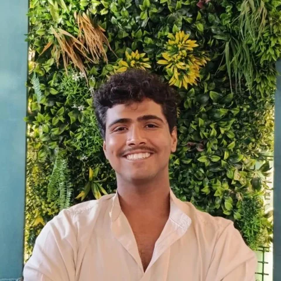

The Indian Summit Foundation: Secretariat
- Helped organise the Model United Nations (MUN) conference.
- Handled crowd control for 800+ delegates.
BBA & Spanish Student | Figuring it out
Two degrees, one very curious mind. I like learning new things, meeting new people and keeping a good balance between hard work and having fun.

I'm a first-year student building two degrees side by side: BA (Hons) Spanish at Jawaharlal Nehru University and a BBA in Digital Business and Entrepreneurship at IIM Bangalore. One teaches me to think in another language and culture. The other teaches me how businesses are built and run.
I love learning new things, and I'm a social person who is happiest around new people and new ideas. I'm also pretty chill: I take my work seriously, and I know how to switch off and enjoy life too. I'm still figuring out exactly where I'm headed, and I treat that as a reason to stay curious, not a reason to wait.
Six MUN involvements across committees, including:
Studying how digital businesses are designed and run, with courses such as Website Development.
Studying the Spanish language along with the culture and civilisation of the Spanish-speaking world.
Built for my Website Development course at IIM Bangalore. It uses semantic HTML, a sticky flexbox navigation bar, CSS grid cards, a three-colour palette and a responsive layout for phones.
Tools: HTML, CSS, GitHub Pages